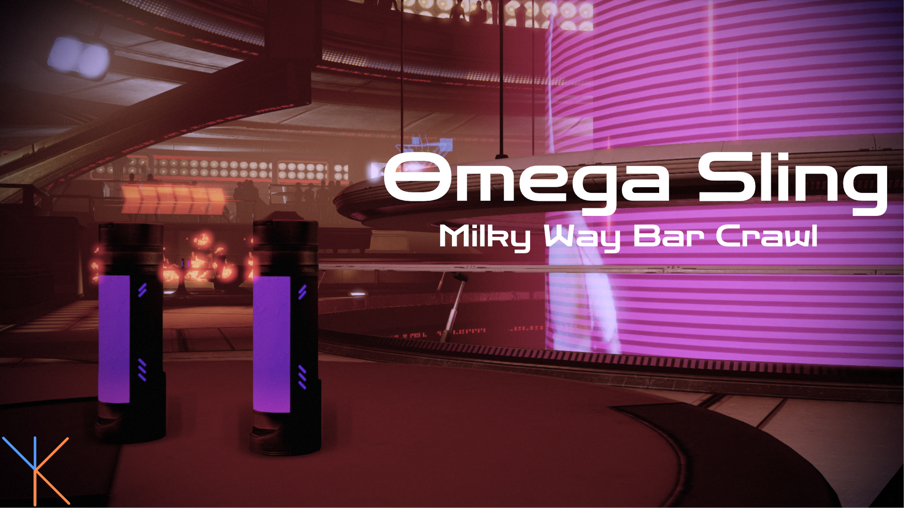

Back in Business
Second stop on the crawl - Mass Effect 2, sharper suits, louder bars, and a few more questionable decisions. Same focus here: cohesion, stability, immersion. We’re keeping things clean without losing the soul.
Top off your glass and gather the team; the night’s still young.
A note on downloading mods:
Batch
A curated night around the galaxy awaits those partaking in my vision.
To start, download your menu for the evening:
Omega Sling: Bold, smooth, and dangerously intoxicating - a stylish rush through the galaxy's underworld.
Download it directly here:

or from the Nexus page:
(Nexus link to my guide once it's online)
Installation
Who says the journey need be any less than the destination? Here’s the secret to a good bar crawl:
- Open M3.
- Navigate to Mod Management → Batch Mod Installer.
-
- If you downloaded the list through M3, it will appear automatically.
- If you downloaded it manually, place the file into:(Your M3 folder)/mods/BatchModQueues
Then reopen the Batch Mod Installer. -
Go down the list and download each mod through the Batch Mod Installer to ensure you get the correct versions.
Depending on file sizes and whether you’re on free or premium Nexus, this may take a bit - please be patient with our aging barman. - Once all mods are downloaded, click Install this group and wait for the process to finish.
- Launch the game once to confirm everything works.
- Enjoy the rest of your night and proceed to Finish.
Manual
An unforgettable selection awaits the adventurous soul - those who wish to color the night to their own liking.
Patches / Compatibility / Downloads
Thanks to the install order below, all required compatibility patches will appear at the correct time.
You can simply follow the list from top to bottom.
Unofficial LE2 Patch
Fixes thousands of bugs in the game and is foundational for a lot of other mods.
Myriad Pro Begone
Replaces the font used throughout the game with something more fitting for the setting.
Note: The file you download has a version for every game plus the Launcher. You may import everything if you want or just choose the ME2 version.
LE2 Prologue Framework
This game is so borked you need a framework mod to safely edit the prologue.
Genesis Begone
Genesis is an official DLC that makes shoddy edits to the prologue in an attempt to onboard people who skipped ME1. This mod undoes them.
Note: This mod requires LE2 Prologue Framework AND Unofficial LE2 Patch.
Note: If you are curious about the interactive comic summary you can leave that prompt intact.
Casual Hubs
You and your squadmates wear casual outfits during hub visits (e.g. Citadel) instead of armor.
Skip Minigames
Allows you to skip the thrilling minigames you definitely won't get sick of after thirty hours.
One Probe All Resources
Cut down on planet scanning time by doing exactly what the the title of the mod promises.
Changes To Imported Credits
The LE cut down on the bonus you got for importing a rich character into LE2. This gives you a bit more breathing room at the start again.
Note: I recommend you pick the 500K credits option. Gives you some good spending money at the start without feeling completely overpowered.
Shorter Notifications
Adjusts the length of notification popups.
Note: I recommend the default option.
EGM Weapons in Cutscenes
A feature backported from a mod for LE3 which edits dialogue to use your actual loadout instead of the default weapons.
Let Me Stay
Removes a popup at the end of some missions prompting you to leave.
F.I.S.H.
Kelly will now feed your fish without needing to flirt with her.
Fish Feeder Mod
Adds a purchaseable fish feeder that will automatically stop aquatic accidents.
Fate of Executor Pallin
Adjusts the lore around the death of a character.
Note: This mod requires you to play with an imported save that used LE1 Diversification Project.
Pilot In Location On Time
Adjusts a line at the end of the Arrival DLC. Yes really.
Stop Auto-Equipping Weapons
Stops the game from automatically equipping every new weapon you find.
Overlord Morality Fix
The final choice in the Overlord DLC is supposed to award morality points. This mod restores that.
M-44 Battle Tank
Makes the M-44 Hammerhead a lot tougher and versatile to use.
Note: If you like how the vehicle behaves in vanilla you may want to skip this one.
Hugo Gernsback Consistency
Removes ammo drops from the mission since the ship crashed before everyone switched to thermal clips.
Early-Ish
Causes some characters to show up earlier than usual allowing you to do their quest from the start of the game.
Shortest Interrogation Ever
During an Interrogation scene you have a chance to skip to the end with a high renegade check. This mod removes the morality requirement.
All VIP Club Encounters
During a club scene it is normally not required to do every interaction. This mod lets you see them all in one playthrough.
Reformatted Emails
Adds sender names to email titles.
Open My Ship
In the beginning of the game much of your ship is locked until you recruit the right person. This mod unlocks the ship from the start.
Permanent CIC Hologram
Makes the holograms in the CIC persistent regardless of where you are.
Note: The file contains both the LE2 and LE3 version. You can import both or just the LE2 version.
Platonic Post Horizon E-Mail
The virmire survivor will usually only send you an email after horizon if you've romanced them. Now there is a normal version too.
Apollo Spacesuit Restoration
Restores cut ambiance dialogue about the spacesuit along with a fitting model during a heist quest.
Wrex/Wreav Armor Consistency
Gives Wrex his iconic armor to wear.
Samara Cut Shadow Broker Dossier
Restores a cut dossier entry about Samara in the Shadow Brokers terminal.
Instant Shadow Broker Rewards
Removes the timer on the Investment Opportunities terminal.
Earlier Cabin Invites
Makes you able to invite your love interest to your cabin as soon as the romance is locked in.
Reaper Fight Timer
Adds an eight minute countdown to the final boss for story reasons.
DLC Timings Mod
Lets you adjust when exactly the DLC trigger.
Note: Personally I recommend to push Arrival until after you've completed Lair of the Shadow Broker AND the final mission.
Suicide Mission Overhaul Mod
An overhaul of the suicide mission, including new mechanics and restored content.
Cerberus Daily News Mails
Incorporates the defunct Cerberus Daily News articles written by Bioware back into the game as emails.
Zaeed's Wholesome Revenge
Allows you to safe the refinery and make Zaeed happy if you can finish the back half of the mission in a strict time limit.
Nos Astra Mineral Exchange
Adds a mineral exchange system to Illium plus a little voiced quest.
Geth Retrofits
Overhauls and diversifies the Geth enemies to bring them in line with LE3.
Modern Weapons Pack
Adds a whole host of new weapons to the game.
Expanded Shepard Armory
Adds a ton of new armors to the game as well as unlocking helmetless versions of DLC armor.
Expanded Squadmate Armory (ESA Addon)
Addon for ESA that includes a ton of new armors for squadmates.
Extended Romance Scenes
Backports the longer romance scenes from LE3.
Liara Consistency Mod
Updates Liara's design to make it consistent across games.
Note: If you want to texture mod your game later grab the optional file matching your preference.
Note: You have two options here. Personally I recommend her LE3 appearance to have her be consistent throughout the trilogy.
Aria Consistency Mod
Updates Aria's design to bring it in line with her LE3 look.
Quarian Admirality Board Consistency
Updates the Quarian Admirals looks to bring it in line with their LE3 versions.
Oriana Looks Like Miranda's Twin
Changes Oriana's face into Miranda's so they actually look like twins.
Cerberus and Alliance Uniform Consistency
Backports the LE3 Cerberus/Alliance fatigues armor/officer uniforms.
Cerberus Ladies Wear Cerberus
Restores the correct uniforms to most female Cerberus crew members.
Note: Don't select the option to restore Kelly's hair. The next mod will take care of that.
Kelly and Kenson Restoration
Restores the original hair of Kelly and Dr. Kenson.
Early Recruitment
Allows you to recruit everyone from the start.
Note: I recommend choosing the Classic version.
Anderson and Hackett Consistency Mod
Backports the LE3 dress blues for Anderson and Hackett.
Sheploo Appearance Consistency Project
Makes default MaleShep consistent with LE1 and LE3.
A Lot Of Videos
Manually upscaled all pre-rendered videos in the game to 4k60fps.
Smoother GUI
The menus in the game are rendered at 30fps. This mod adjusted them to 60fps, which is a noticeable improvement.
Patch Notes
All necessary compatibility patches should have appeared at the right time during installation.
If a patch option did not appear for a mod, simply reinstall that single mod to refresh its patch list.
Otherwise, no additional steps are required - you're good to go.
Proceed to the next game or go to Finish.